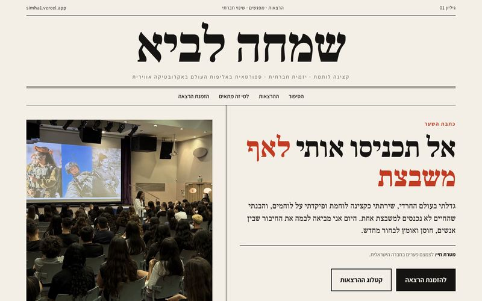
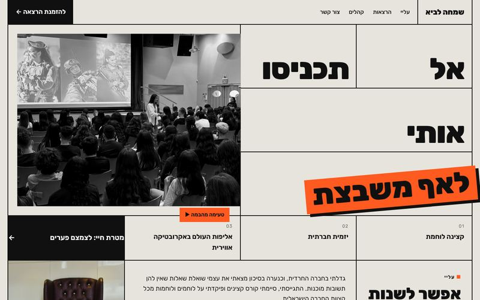
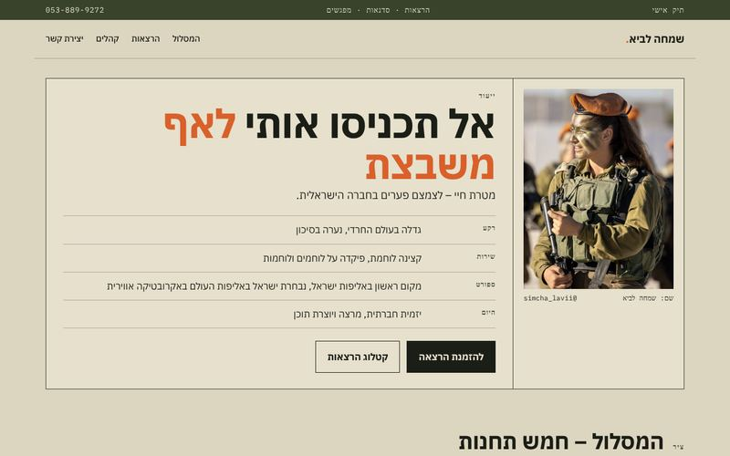
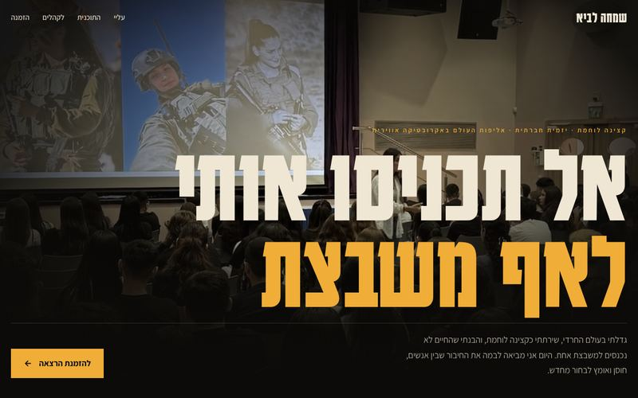
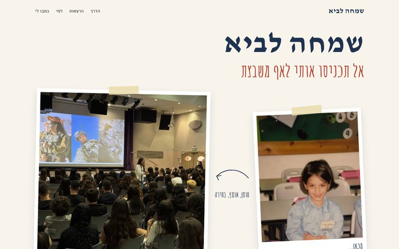

כל כיוון בנוי מרעיון שלקוח מהסיפור שלה, עם התוכן, התמונות והסרטון האמיתיים. לחצו על כל אחד כדי לגלול בעמוד המלא. אפשר לעבור ביניהם עם הכפתור השחור בתחתית המסך.

שמחה ככתבת שער: כותרת סריפית גדולה, קווים דקים, טור עיתונאי עם אות פתיחה, וההרצאות כ"תוכן העניינים". רציני, בוגר ואמין – מתאים לפנייה לארגונים ומשרדי ממשלה.

הסלוגן הופך לעיצוב: כל האתר בנוי מרשת משבצות שחורה, ו"לאף משבצת" פורץ החוצה מהרשת בכתום של הכומתה. נועז, צעיר וזכיר.

כמו תיק אישי ותעודה: שדות, קודים, ציר של חמש תחנות בחיים (בית חרדי → קצונה → צדק מאחה → אקרובטיקה → במה), וההרצאות כ"תדריכים" בטבלה. מסודר ומדויק, בלי להפוך לקיטש צבאי.

קולנועי: הסרטון על כל המסך עם "אור זרקור", כותרת צרה וענקית, וההרצאות כתוכניית מופע – מערכה א׳, ב׳, ג׳, ד׳. הכי דרמטי ומרשים במבט ראשון.

אישי וחם: הפתיחה מצמידה את תמונת הילדות מבית הספר החרדי לסרטון מהבמה – "מכאן... לכאן". אחר כך הדרך כמסלול עם תמונות מודבקות וכיתוב בכתב יד, וההרצאות ככרטיסיות.
אלה כיווני עיצוב לבחירה – לא האתר הסופי. אחרי שתבחרו כיוון (או שילוב בין כמה), נעביר אליו את כל האתר: כל הטקסטים, הטופס, הגלריה וההמלצות. האתר הנוכחי ממשיך לעבוד כרגיל בכתובת הראשית.